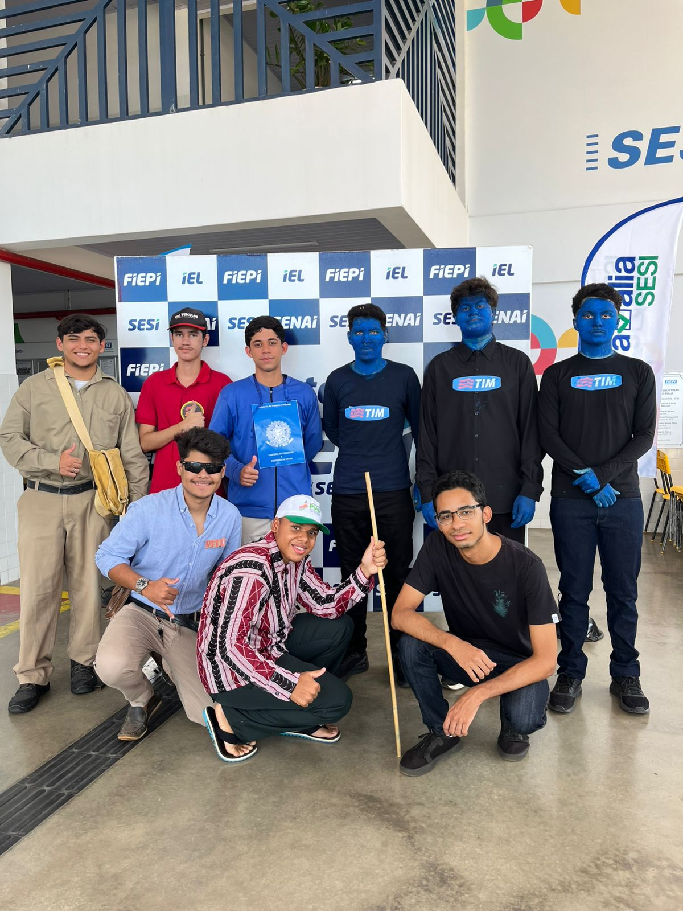
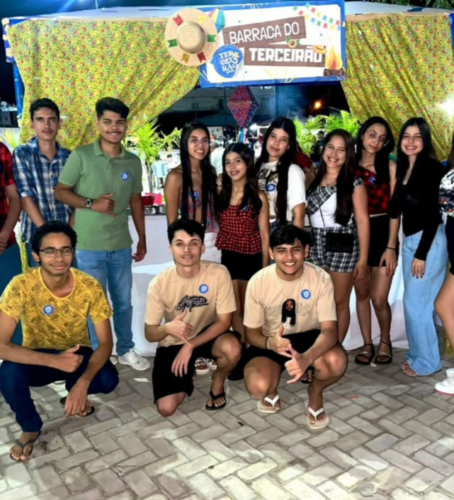
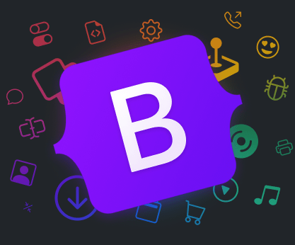

Portfólio
Gabriel Matias
Desenvolvedor Web
Orientação: Cleiton Leal e Regiane Leal
Objetivos
- Avaliar meus próprios trabalhos e desempenho para reconhecer meu desenvolvimento e evolução adquiridos ao longo do ano.
- Organizar atividades de forma simplificada a fim de um melhor aproveitamento dos conteúdos.
Minha História
Me chamo Gabriel Matias, sempre estudei no SESI, tenho 18 anos e há três anos iniciei o ensino médio, atualmente na Terceira série. Nasci e sempre morei na cidade de Picos. Quando era mais novo, era bem preguiçoso, mas hoje em dia mudei um pouco e consigo me sair bem, superando boa parte dos desafios. Melhorei meu desempenho, consegui a bolsa de estudos no SESI por todo o ensino médio e sigo me esforçando para alcançar meus objetivos e sonhos.
Áreas de Conhecimento
Ver Atividades EscolhidasCurrículo Profissional

Anexos
-
Trote Terceirão
 -
Interclasse 2025

Referências
-
Toda Matéria
-
ChatGPT
-
Bootstrap

Considerações Finais
Este portfólio marca o encerramento de uma etapa importante da minha vida escolar. Ao longo do Ensino Médio, enfrentei desafios, vivi aprendizados e cresci tanto academicamente quanto como pessoa. Cada atividade aqui representa parte dessa trajetória. Agradeço a todos que fizeram parte desse caminho e contribuíram para minha formação. Levo comigo conhecimentos, experiências e valores que certamente me acompanharão nos próximos passos.